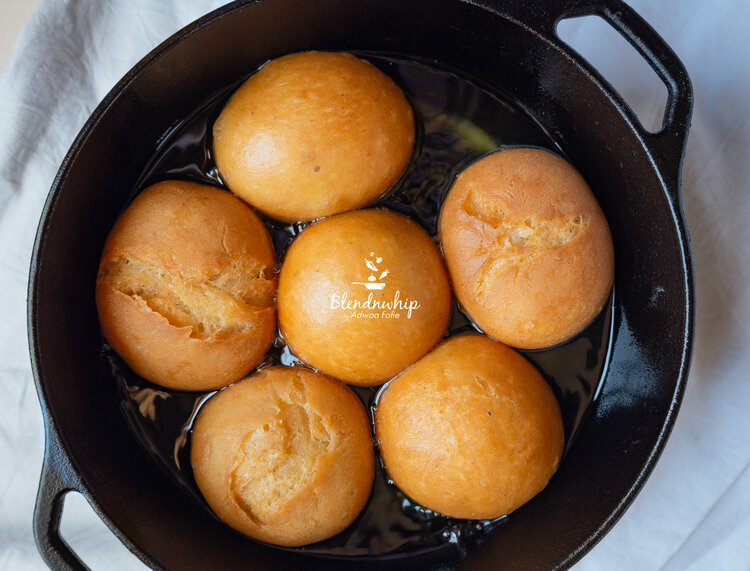

Puffloaf

Puff loaf, also known as bofrot or toogbe, is a popular Ghanaian dish made from deep-fried dough. It is often served as a snack or dessert, and can be enjoyed plain or with a variety of toppings, such as sugar, honey, or chocolate.
Puff loaf is a relatively simple dish to make, but it does require a bit of time and patience. The dough must be allowed to rise twice, which can take up to an hour. However, the wait is worth it, as puff loaf is a light and fluffy treat that is sure to please everyone.
Here is everything you will need to make Puff loaf
- 420g (3cups) hard/bread flour
- 38g (3 tablespoons) evaporated milk
- 7g fine sea salt
- 70g - 75g (1/4+ cup) granulated sugar
- 1 tablespoon instant yeast
- 1 generous tablespoon freshly grated nutmeg
- 60g ( 1/4 cup )margarine
- 146g (1/ 3 cups + 6 tablespoons) water
- 1L flavorless vegetable oil
Now that you've sorted the ingredients out let's get to making some delicious Bofrot
- Combine all the dry ingredients and place in a mixing bowl of an electric mixer. Combine the water and the milk and set aside. Using the knead attachment, mix on medium till all the ingredients are combined then add the wet ingredients except the margarine. Knead until the flour absorbs all the moisture and it forms a ball, albeit a not so smooth ball.Add the margarine and turn the mixer to medium high. Knead for 15 to 25 mins, until dough is shiny and elastic.
- Alternatively in the absence of a mixer: combine all the dry ingredients in a bowl and stir together with a whisk. Add the milk and water and mix with fingers until all the flour is coated then pour unto a clean surface. Knead until semi smooth, about 7 mins the add the margarine and continue kneading for about 20 mins. Do not add more flour, there'll be the temptation to especially after you add the margarine. You can take breaks between kneading. Knead until dough is completely smooth, shiny and elastic.
- Divide dough into 10 equal pieces for medium sized bofrots. Shape each of them into a smooth ball, almost like a golf ball. Place dough balls on a floured tray and be sure to leave spaces between each of them so they don't touch when they rise. Cover tray with a kitchen towel or napkin and leave in a warm place until doubled in size, about 1 hr to 1hr 30 mins
- Heat oil over medium heat until hot but not too hot. If the oil is too hot, the bofrot is going cook on the outside but remain raw on the inside. If the oil is not hot enough, the bofrot will absorb so much of it. If you find out that it's browning too quickly, the oil is too hot then. To fry, gently place the bofrots in the oil, as much as you can fit. Turn occasionally so each side fries equally. Fry until golden to golden brown. It's going to take 7 to 10 mins.
Puff loaf can be taken with any porridge or beverage you prefer.And there you have it the best Bofrot recipe you can find online